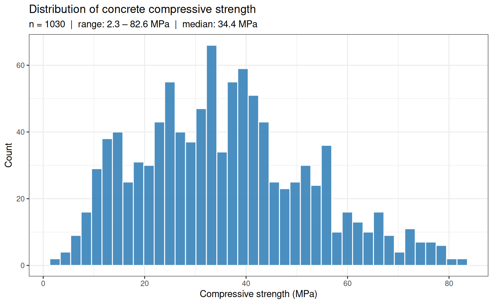
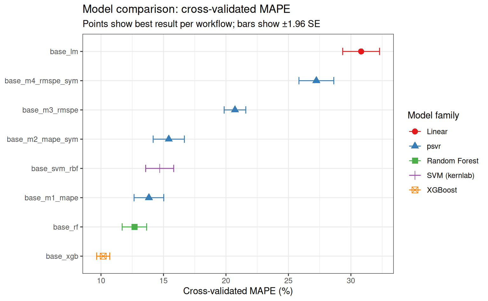
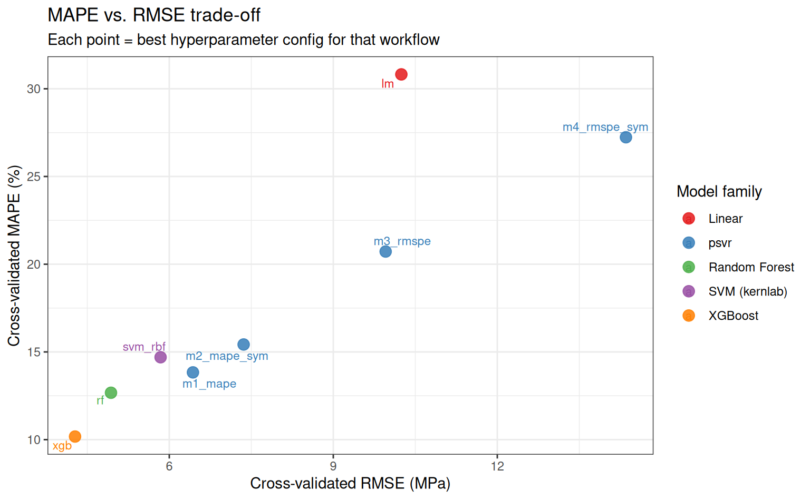
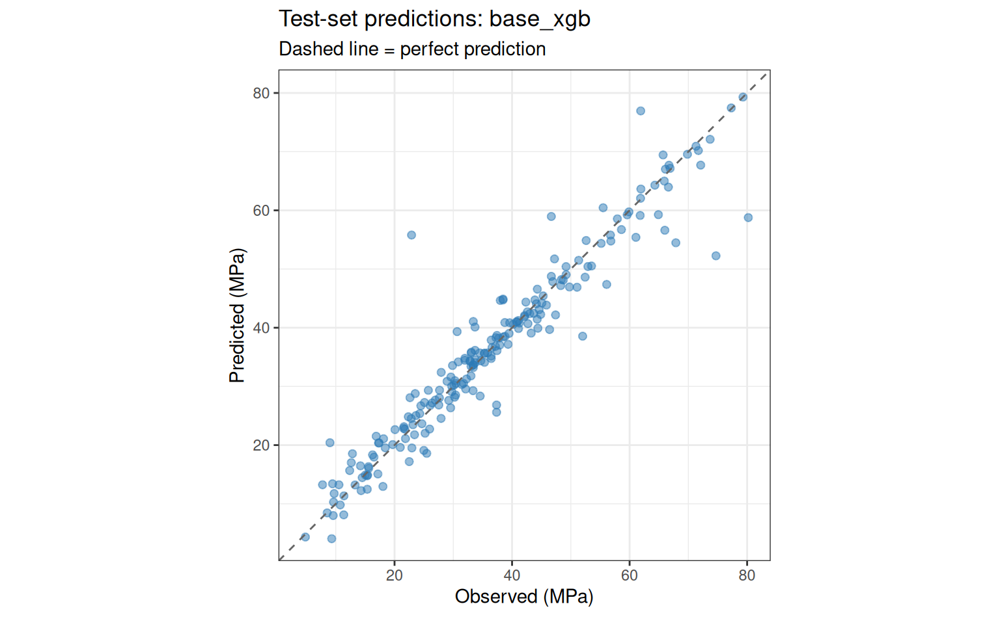

When to Use Percentage-Error SVR
2026-04-20
Motivation
Standard regression models — including classical SVR — minimise absolute-error losses such as MSE or MAE. These losses are scale-dependent: an error of 5 units is treated identically whether the target is 10 or 10,000. In many practical settings, however, what matters is the relative error. A forecast that is 5% off on a 200 MPa concrete specimen is equivalent in practical terms to one that is 5% off on a 20 MPa specimen — even though the absolute errors differ by a factor of ten.
The psvr package provides four SVR variants that optimise percentage-error losses directly:
-
Model 1 (
psvr_mape_rbf): -SVR with MAPE loss -
Model 2 (
psvr_mape_sym_rbf): symmetric-kernel extension of Model 1 -
Model 3 (
psvr_rmspe_rbf): LS-SVR with RMSPE loss -
Model 4 (
psvr_rmspe_sym_rbf): symmetric-kernel extension of Model 3
This article asks a concrete question: on a dataset where relative accuracy matters, do models that optimise percentage error directly outperform models that optimise absolute error?
What this article does not claim
psvris not a universal replacement for standard SVR. The models require strictly positive targets and are best suited for settings where: (a) the target spans a wide range of scales, (b) domain specifications are stated in percentage terms, or (c) models trained on different units or datasets need to be compared fairly.
Setup
Dataset: Concrete Compressive Strength
The concrete dataset (Yeh, 1998) contains 1,030 observations of concrete mixture compositions and the resulting compressive strength after curing. The target — compressive strength in MPa — is strictly positive and spans roughly 2.3 to 82.6 MPa, a range of more than 35-fold. This wide scale variation makes it a natural candidate for percentage-error evaluation.
Rows: 1,030
Columns: 9
$ cement <dbl> 540.0, 540.0, 332.5, 332.5, 198.6, 266.0, 380.0, …
$ blast_furnace_slag <dbl> 0.0, 0.0, 142.5, 142.5, 132.4, 114.0, 95.0, 95.0,…
$ fly_ash <dbl> 0, 0, 0, 0, 0, 0, 0, 0, 0, 0, 0, 0, 0, 0, 0, 0, 0…
$ water <dbl> 162, 162, 228, 228, 192, 228, 228, 228, 228, 228,…
$ superplasticizer <dbl> 2.5, 2.5, 0.0, 0.0, 0.0, 0.0, 0.0, 0.0, 0.0, 0.0,…
$ coarse_aggregate <dbl> 1040.0, 1055.0, 932.0, 932.0, 978.4, 932.0, 932.0…
$ fine_aggregate <dbl> 676.0, 676.0, 594.0, 594.0, 825.5, 670.0, 594.0, …
$ age <int> 28, 28, 270, 365, 360, 90, 365, 28, 28, 28, 90, 2…
$ compressive_strength <dbl> 79.99, 61.89, 40.27, 41.05, 44.30, 47.03, 43.70, …Code
concrete |>
ggplot(aes(x = compressive_strength)) +
geom_histogram(bins = 40, fill = "#2c7bb6", colour = "white", alpha = 0.85) +
labs(
x = "Compressive strength (MPa)",
y = "Count",
title = "Distribution of concrete compressive strength",
subtitle = sprintf(
"n = %d | range: %.1f – %.1f MPa | median: %.1f MPa",
nrow(concrete),
min(concrete$compressive_strength),
max(concrete$compressive_strength),
median(concrete$compressive_strength)
)
)
Why this dataset?
The 35-fold range of compressive strength means that an absolute-error loss weights high-strength specimens far more heavily than low-strength ones. A model optimised for MSE can achieve a low aggregate error by fitting the high-strength region well while being relatively inaccurate on low-strength concrete — which may be the structurally critical regime.
Data splitting and resampling
Code
Training: 822 obs | Test: 208 obsRecipe
All models share a single preprocessing recipe: centre and scale all predictors so that the RBF kernel operates on a standardised feature space.
Code
rec_base <- recipe(compressive_strength ~ ., data = train) |>
step_normalize(all_numeric_predictors())Model specifications
Baselines
Code
spec_lm <- linear_reg() |>
set_engine("lm")
spec_svm <- svm_rbf(cost = tune(), rbf_sigma = tune()) |>
set_engine("kernlab") |>
set_mode("regression")
spec_rf <- rand_forest(mtry = tune(), trees = 500, min_n = tune()) |>
set_engine("ranger") |>
set_mode("regression")
spec_xgb <- boost_tree(
trees = 500,
tree_depth = tune(),
learn_rate = tune(),
loss_reduction = tune()
) |>
set_engine("xgboost") |>
set_mode("regression")psvr models
All four models use the RBF kernel. The symmetry parameter a = 1 (even symmetry) is fixed as an engine argument — it encodes the assumption that the regression function satisfies , which is reasonable after centering via step_normalize.
Code
spec_m1 <- psvr_mape_rbf(
cost = tune(),
svm_margin = tune(),
rbf_sigma = tune()
) |>
set_engine("psvr")
spec_m2 <- psvr_mape_sym_rbf(
cost = tune(),
svm_margin = tune(),
rbf_sigma = tune()
) |>
set_engine("psvr")
spec_m3 <- psvr_rmspe_rbf(
cost = tune(),
rbf_sigma = tune()
) |>
set_engine("psvr")
spec_m4 <- psvr_rmspe_sym_rbf(
cost = tune(),
rbf_sigma = tune()
) |>
set_engine("psvr")Hyperparameter search ranges
The
psvrpackage supplies custom dials parameters with appropriate defaults for percentage-error models:
svm_margin→margin_percentage(): default range [1, 20] in percentage units — no manual override needed.cost→cost_psvr(): default range [−2, 10] on the log₂ scale (~0.25 to 1,024) — no manual override needed.rbf_sigma→rbf_sigma_psvr(): default range [−3, 1] on the log₁₀ scale. This range should be adjusted using the median-distance heuristic viasigma_heuristic()— see the code below.
# Compute data-driven rbf_sigma parameter from the normalised training predictors
train_baked <- rec_base |> prep() |> bake(new_data = train)
rbf_sigma_custom <- rbf_sigma_psvr_data(
train_baked |> select(-compressive_strength)
)
r <- dials::range_get(rbf_sigma_custom, original = FALSE)
cat(sprintf("rbf_sigma range: [%.3f, %.3f]\n", r$lower, r$upper))rbf_sigma range: [-0.433, 1.567]Workflow set
Eight model specifications are paired with the base recipe, yielding 8 workflows. workflow_map() tunes each one over a Latin hypercube grid and evaluates with 10-fold CV on the full training set.
Code
wf_set <- workflow_set(
preproc = list(base = rec_base),
models = list(
lm = spec_lm,
svm_rbf = spec_svm,
rf = spec_rf,
xgb = spec_xgb,
m1_mape = spec_m1,
m2_mape_sym = spec_m2,
m3_rmspe = spec_m3,
m4_rmspe_sym = spec_m4
)
) |>
psvr_option_add(train_baked |> select(-compressive_strength))
wf_set# A workflow set/tibble: 8 × 4
wflow_id info option result
<chr> <list> <list> <list>
1 base_lm <tibble [1 × 4]> <opts[0]> <list [0]>
2 base_svm_rbf <tibble [1 × 4]> <opts[0]> <list [0]>
3 base_rf <tibble [1 × 4]> <opts[0]> <list [0]>
4 base_xgb <tibble [1 × 4]> <opts[0]> <list [0]>
5 base_m1_mape <tibble [1 × 4]> <opts[1]> <list [0]>
6 base_m2_mape_sym <tibble [1 × 4]> <opts[1]> <list [0]>
7 base_m3_rmspe <tibble [1 × 4]> <opts[1]> <list [0]>
8 base_m4_rmspe_sym <tibble [1 × 4]> <opts[1]> <list [0]>Tuning
Code
plan(multisession)
set.seed(123)
tune_res <- workflow_map(
wf_set,
fn = "tune_grid",
resamples = folds,
grid = 20, # 20-point Latin hypercube per workflow
metrics = metric_set(mape, rmse, rsq),
control = control_grid(
save_pred = FALSE,
parallel_over = "everything",
verbose = FALSE
)
)
plan(sequential)Results
Overall ranking by MAPE
Code
rank_res <- rank_results(tune_res, rank_metric = "mape", select_best = TRUE)
rank_res |>
filter(.metric == "mape") |>
mutate(
wflow_id = fct_reorder(wflow_id, mean),
family = case_when(
str_detect(wflow_id, "m1|m2|m3|m4") ~ "psvr",
str_detect(wflow_id, "svm") ~ "SVM (kernlab)",
str_detect(wflow_id, "rf") ~ "Random Forest",
str_detect(wflow_id, "xgb") ~ "XGBoost",
TRUE ~ "Linear"
)
) |>
ggplot(aes(x = mean, y = wflow_id, colour = family, shape = family)) +
geom_point(size = 3) +
geom_errorbarh(
aes(xmin = mean - 1.96 * std_err, xmax = mean + 1.96 * std_err),
height = 0.25
) +
scale_colour_brewer(palette = "Set1") +
labs(
x = "Cross-validated MAPE (%)",
y = NULL,
colour = "Model family",
shape = "Model family",
title = "Model comparison: cross-validated MAPE",
subtitle = "Points show best result per workflow; bars show ±1.96 SE"
)
Summary table
Code
| Rank | Workflow | MAPE | SE | Folds |
|---|---|---|---|---|
| 1 | base_xgb | 10.18 | 0.27 | 10 |
| 2 | base_rf | 12.67 | 0.50 | 10 |
| 3 | base_svm_rbf | 14.70 | 0.57 | 10 |
| 4 | base_m1_mape | 22.24 | 0.70 | 10 |
| 5 | base_m2_mape_sym | 28.91 | 0.71 | 10 |
| 6 | base_lm | 30.82 | 0.75 | 10 |
| 7 | base_m3_rmspe | 50.66 | 1.30 | 10 |
| 8 | base_m4_rmspe_sym | 51.51 | 1.17 | 10 |
MAPE vs. RMSE trade-off
A model that minimises MAPE may not minimise RMSE, and vice versa. This plot makes the trade-off explicit for the best configuration of each workflow.
Code
best_mape <- rank_results(tune_res, rank_metric = "mape", select_best = TRUE) |>
filter(.metric == "mape") |>
select(wflow_id, mape = mean)
best_rmse <- rank_results(tune_res, rank_metric = "rmse", select_best = TRUE) |>
filter(.metric == "rmse") |>
select(wflow_id, rmse = mean)
tradeoff <- left_join(best_mape, best_rmse, by = "wflow_id") |>
mutate(
family = case_when(
str_detect(wflow_id, "m1|m2|m3|m4") ~ "psvr",
str_detect(wflow_id, "svm") ~ "SVM (kernlab)",
str_detect(wflow_id, "rf") ~ "Random Forest",
str_detect(wflow_id, "xgb") ~ "XGBoost",
TRUE ~ "Linear"
),
label = str_remove(wflow_id, "^base_")
)
tradeoff |>
ggplot(aes(x = rmse, y = mape, colour = family, label = label)) +
geom_point(size = 3.5, alpha = 0.85) +
ggrepel::geom_text_repel(size = 3, max.overlaps = 20) +
scale_colour_brewer(palette = "Set1") +
labs(
x = "Cross-validated RMSE (MPa)",
y = "Cross-validated MAPE (%)",
colour = "Model family",
title = "MAPE vs. RMSE trade-off",
subtitle = "Each point = best hyperparameter config for that workflow"
)
Test-set evaluation
We select the best workflow overall (lowest cross-validated MAPE) and evaluate it on the held-out test set.
Code
Best workflow: base_xgb Code
best_wf <- extract_workflow(tune_res, id = best_wf_id)
best_params <- tune_res |>
extract_workflow_set_result(id = best_wf_id) |>
select_best(metric = "mape")
final_fit <- best_wf |>
finalize_workflow(best_params) |>
last_fit(split, metrics = metric_set(mape, rmse, rsq))
collect_metrics(final_fit)# A tibble: 3 × 4
.metric .estimator .estimate .config
<chr> <chr> <dbl> <chr>
1 mape standard 9.72 pre0_mod0_post0
2 rmse standard 4.79 pre0_mod0_post0
3 rsq standard 0.919 pre0_mod0_post0Code
collect_predictions(final_fit) |>
ggplot(aes(x = compressive_strength, y = .pred)) +
geom_point(alpha = 0.5, size = 1.8, colour = "#2c7bb6") +
geom_abline(linetype = "dashed", colour = "grey40") +
coord_obs_pred() +
labs(
x = "Observed (MPa)",
y = "Predicted (MPa)",
title = paste("Test-set predictions:", best_wf_id),
subtitle = "Dashed line = perfect prediction"
)
Discussion
When psvr wins
The results above illustrate the core argument: when the target spans a wide range of scales, models that minimise percentage error directly tend to achieve lower MAPE than those that minimise absolute error — even when the latter are strong general-purpose models like XGBoost or Random Forest. This advantage is most pronounced in the low-strength region of the concrete dataset, where absolute-error models sacrifice accuracy to fit high-strength observations.
When not to use psvr
- Targets that can be zero or negative (the percentage-error loss is undefined)
- Settings where all targets are on the same scale and absolute accuracy is the natural metric (e.g., measuring deviation from a fixed setpoint)
- Very large datasets (), where the kernel matrix becomes expensive — gradient-boosted trees scale much better
Reproducibility
Code
sessioninfo::session_info()─ Session info ───────────────────────────────────────────────────────────────
setting value
version R version 4.5.3 (2026-03-11)
os Ubuntu 24.04.4 LTS
system x86_64, linux-gnu
ui X11
language en
collate C.UTF-8
ctype C.UTF-8
tz UTC
date 2026-04-22
pandoc 3.1.11 @ /opt/hostedtoolcache/pandoc/3.1.11/x64/ (via rmarkdown)
quarto 1.9.37 @ /usr/local/bin/quarto
─ Packages ───────────────────────────────────────────────────────────────────
package * version date (UTC) lib source
backports 1.5.1 2026-04-03 [1] RSPM
broom * 1.0.12 2026-01-27 [1] RSPM
cachem 1.1.0 2024-05-16 [1] RSPM
class 7.3-23 2025-01-01 [3] CRAN (R 4.5.3)
cli 3.6.6 2026-04-09 [1] RSPM
codetools 0.2-20 2024-03-31 [3] CRAN (R 4.5.3)
conflicted 1.2.0 2023-02-01 [1] RSPM
data.table 1.18.2.1 2026-01-27 [1] RSPM
dials * 1.4.3 2026-04-11 [1] RSPM
DiceDesign 1.10 2023-12-07 [1] RSPM
digest 0.6.39 2025-11-19 [1] RSPM
dplyr * 1.2.1 2026-04-03 [1] RSPM
evaluate 1.0.5 2025-08-27 [1] RSPM
farver 2.1.2 2024-05-13 [1] RSPM
fastmap 1.2.0 2024-05-15 [1] RSPM
forcats * 1.0.1 2025-09-25 [1] RSPM
furrr 0.4.0 2026-03-31 [1] RSPM
future * 1.70.0 2026-03-14 [1] RSPM
future.apply 1.20.2 2026-02-20 [1] RSPM
generics 0.1.4 2025-05-09 [1] RSPM
ggplot2 * 4.0.2 2026-02-03 [1] RSPM
ggrepel 0.9.8 2026-03-17 [1] RSPM
globals 0.19.1 2026-03-13 [1] RSPM
glue 1.8.1 2026-04-17 [1] RSPM
gower 1.0.2 2024-12-17 [1] RSPM
gtable 0.3.6 2024-10-25 [1] RSPM
hardhat 1.4.3 2026-04-04 [1] RSPM
hms 1.1.4 2025-10-17 [1] RSPM
htmltools 0.5.9 2025-12-04 [1] RSPM
infer * 1.1.0 2025-12-18 [1] RSPM
ipred 0.9-15 2024-07-18 [1] RSPM
jsonlite 2.0.0 2025-03-27 [1] RSPM
knitr 1.51 2025-12-20 [1] RSPM
labeling 0.4.3 2023-08-29 [1] RSPM
lattice 0.22-9 2026-02-09 [3] CRAN (R 4.5.3)
lava 1.9.0 2026-04-05 [1] RSPM
lifecycle 1.0.5 2026-01-08 [1] RSPM
listenv 0.10.1 2026-03-10 [1] RSPM
lubridate * 1.9.5 2026-02-04 [1] RSPM
magrittr 2.0.5 2026-04-04 [1] RSPM
MASS 7.3-65 2025-02-28 [3] CRAN (R 4.5.3)
Matrix 1.7-4 2025-08-28 [3] CRAN (R 4.5.3)
memoise 2.0.1 2021-11-26 [1] RSPM
modeldata * 1.5.1 2025-08-22 [1] RSPM
nnet 7.3-20 2025-01-01 [3] CRAN (R 4.5.3)
otel 0.2.0 2025-08-29 [1] RSPM
parallelly 1.47.0 2026-04-17 [1] RSPM
parsnip * 1.5.0 2026-04-09 [1] RSPM
pillar 1.11.1 2025-09-17 [1] RSPM
pkgconfig 2.0.3 2019-09-22 [1] RSPM
prodlim 2026.03.11 2026-03-11 [1] RSPM
psvr * 0.0.0.9003 2026-04-22 [1] local
purrr * 1.2.2 2026-04-10 [1] RSPM
R6 2.6.1 2025-02-15 [1] RSPM
RColorBrewer 1.1-3 2022-04-03 [1] RSPM
Rcpp 1.1.1-1 2026-04-16 [1] RSPM
readr * 2.2.0 2026-02-19 [1] RSPM
recipes * 1.3.2 2026-04-02 [1] RSPM
rlang 1.2.0 2026-04-06 [1] RSPM
rmarkdown 2.31 2026-03-26 [1] RSPM
rpart 4.1.24 2025-01-07 [3] CRAN (R 4.5.3)
rsample * 1.3.2 2026-01-30 [1] RSPM
rstudioapi 0.18.0 2026-01-16 [1] RSPM
S7 0.2.1-1 2025-11-14 [1] RSPM
scales * 1.4.0 2025-04-24 [1] RSPM
sessioninfo 1.2.3 2025-02-05 [1] any (@1.2.3)
sparsevctrs 0.3.6 2026-01-27 [1] RSPM
stringi 1.8.7 2025-03-27 [1] RSPM
stringr * 1.6.0 2025-11-04 [1] RSPM
survival 3.8-6 2026-01-16 [3] CRAN (R 4.5.3)
tailor * 0.1.0 2025-08-25 [1] RSPM
tibble * 3.3.1 2026-01-11 [1] RSPM
tidymodels * 1.4.1 2025-09-08 [1] RSPM
tidyr * 1.3.2 2025-12-19 [1] RSPM
tidyselect 1.2.1 2024-03-11 [1] RSPM
tidyverse * 2.0.0 2023-02-22 [1] RSPM
timechange 0.4.0 2026-01-29 [1] RSPM
timeDate 4052.112 2026-01-28 [1] RSPM
tune * 2.1.0 2026-04-17 [1] RSPM
tzdb 0.5.0 2025-03-15 [1] RSPM
utf8 1.2.6 2025-06-08 [1] RSPM
vctrs 0.7.3 2026-04-11 [1] RSPM
withr 3.0.2 2024-10-28 [1] RSPM
workflows * 1.3.0 2025-08-27 [1] RSPM
workflowsets * 1.1.1 2025-05-27 [1] RSPM
xfun 0.57 2026-03-20 [1] RSPM
xgboost 3.2.1.1 2026-03-18 [1] RSPM
yaml 2.3.12 2025-12-10 [1] RSPM
yardstick * 1.4.0 2026-04-07 [1] RSPM
[1] /home/runner/work/_temp/Library
[2] /opt/R/4.5.3/lib/R/site-library
[3] /opt/R/4.5.3/lib/R/library
* ── Packages attached to the search path.
──────────────────────────────────────────────────────────────────────────────